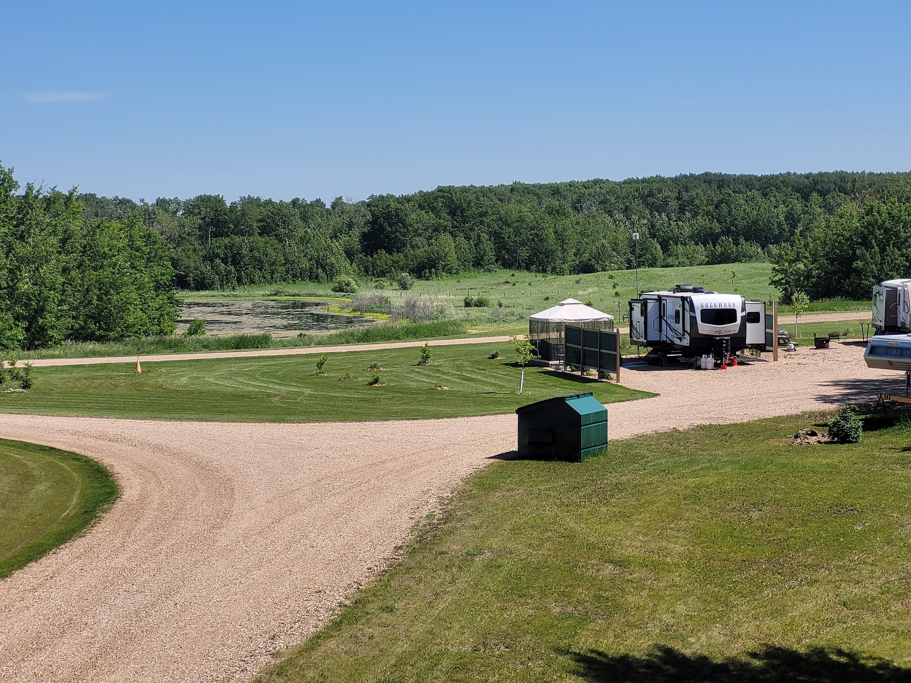
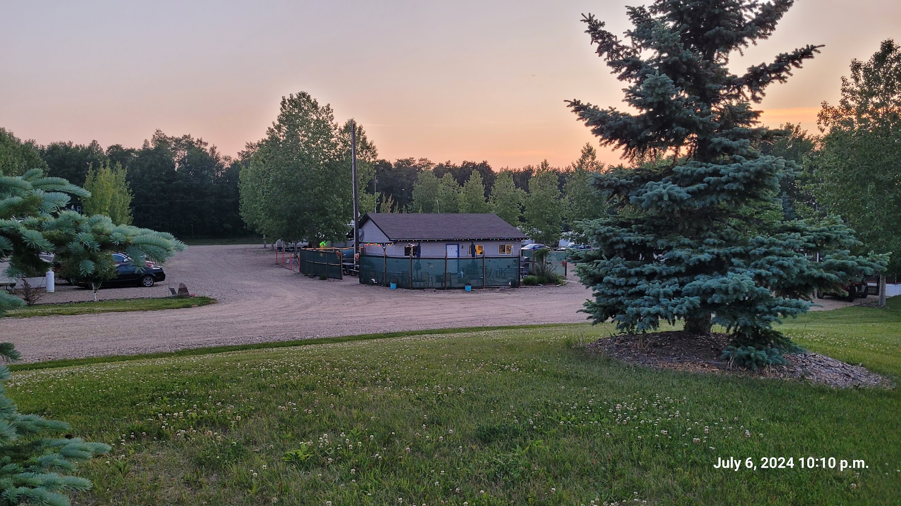
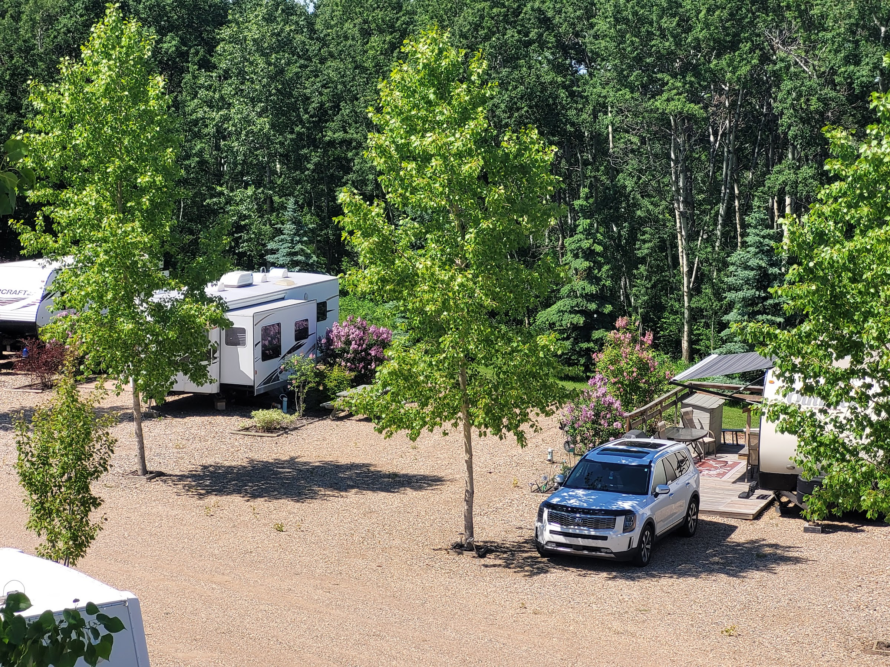
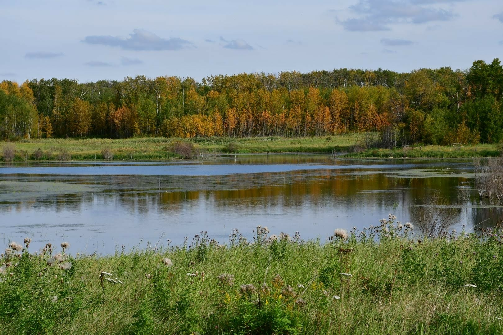
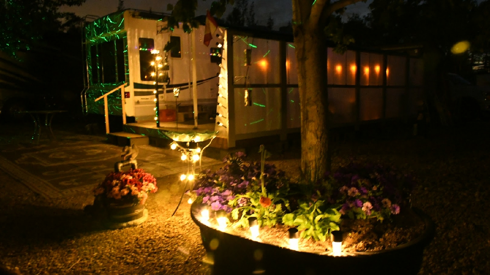
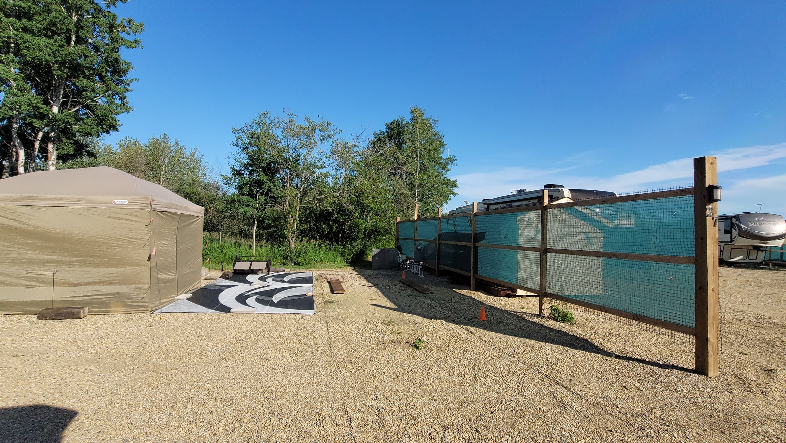
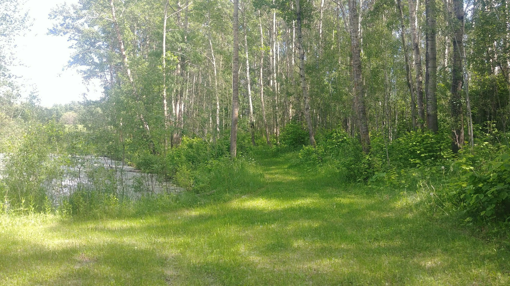
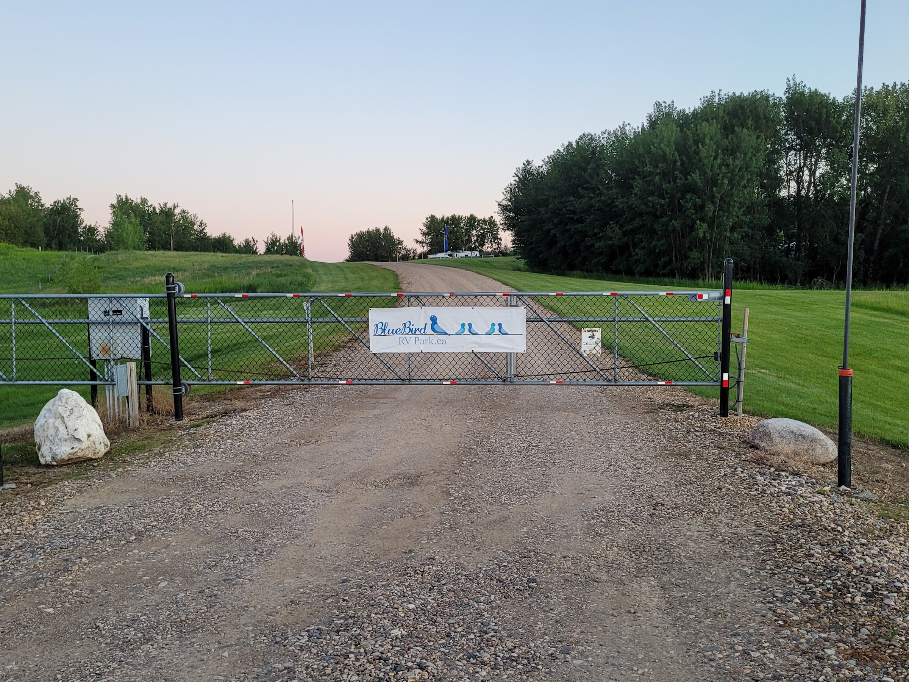
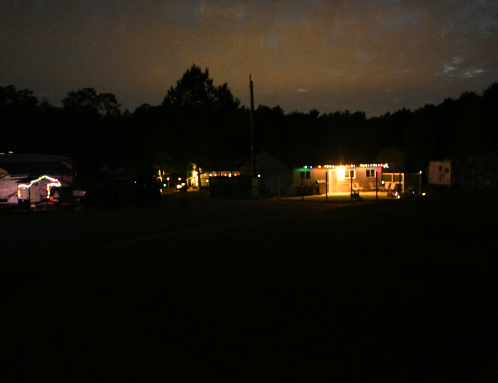
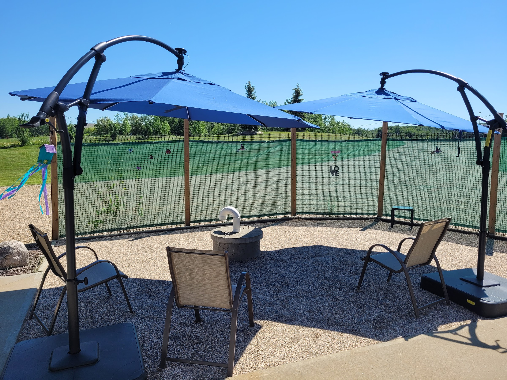

Photos
A look at Bluebird.
A quiet 50+ community on 15 acres in Camrose County — the Birdsnest clubhouse, the grounds, and the wide sky above the prairie that the park sits under.
A quiet 50+ community on 15 acres in Camrose County — the Birdsnest clubhouse, the grounds, and the wide sky above the prairie that the park sits under.
Real photos of the grounds, the sites, the Birdsnest clubhouse and the quiet moments that make Bluebird what it is.

Overlooking the grounds A summer lot, settled in
A summer lot, settled in

Golden hour at the Birdsnest
Tucked in the aspens
Autumn pond & water-fowl viewing
An evening at a site Decks & flowers
Decks & flowers

A screened gazebo in evening light
The walking trail
The Bluebird gate
Birdsnest at night
The common sitting area Sites among the aspens
Sites among the aspens
 Sheds permitted, with approval
Sheds permitted, with approval
Mike and Dawn are happy to give a personal tour by prior arrangement — the best way to see what a season at Bluebird actually looks like. Send a request or call/text 780-446-9842.
A tour beats a photo gallery. Pick a time, come walk the grounds, and meet the owners.